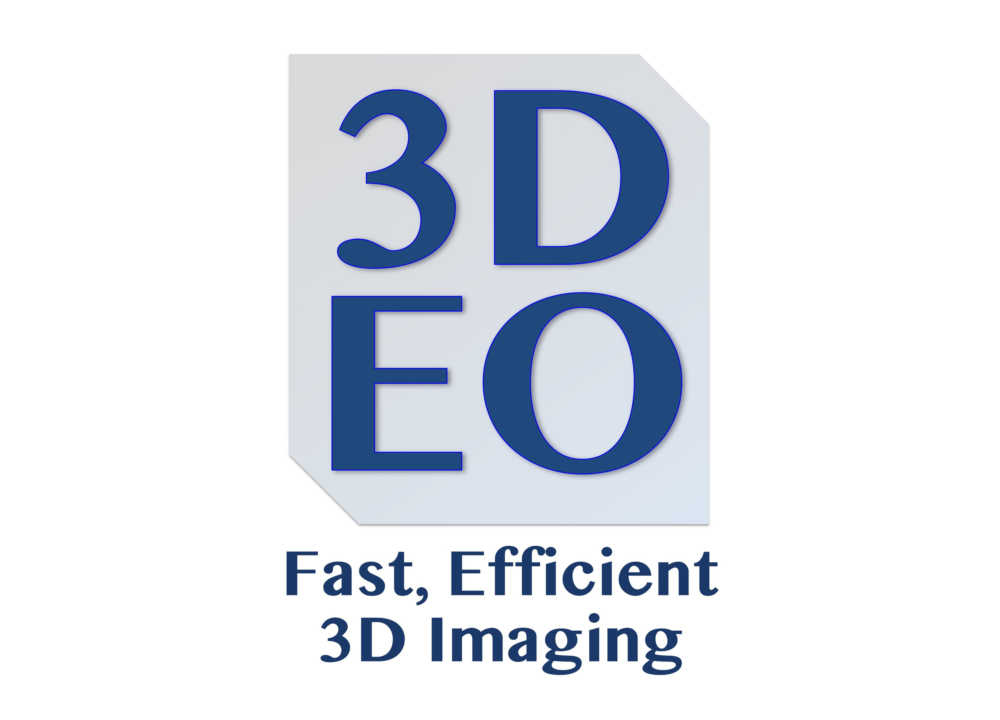

Internship with 3DEO—Data Engineering for Geiger-mode Lidar

This summer I had the opportunity to intern with 3DEO, a spin-out from MIT Lincoln Laboratory specializing in Geiger-mode lidar. Read more about 3DEO’s awesome work in this LIDAR Magazine article. Here I will focus primarily on my contributions and what I learned.
All lidar systems work by sending out light, timing its reflection, and combining that with the sensor’s position and angle to locate the target—like bats using echolocation, but with light instead of sound. Most lidar (linear-mode) uses a single sensor that measures the intensity of the returning light over time and marks the reflection time as the point where the intensity peaks. Unlike linear-mode lidar, Geiger-mode lidar uses an array of detectors, each of which is sensitive to individual photons rather than continuous light intensity.
Because it uses an array of detectors, the speed at which Geiger-mode lidar sensors collect data is extremely fast. When I worked with a 60 or 70 gigabyte dataset I helped create for BYU’s “Locating Bacterial Flagellar Motors 2025” Kaggle competition, I struggled to perform any kind of processing because of the I/O bottlenecks resulting from the size of the data, but at 3DEO I worked with terabytes of raw point cloud data. It is not unusual for a single data processing run to go through tens (if not hundreds) of billions of photon detections and pull them together into a single data product, easily plowing through weeks of CPU time to do so. The unique challenges I faced in my work at 3DEO pushed me to think creatively and simplify algorithms beyond the level I was used to. I learned and grew in so many ways, too many to be able to write about. I’ll try to hit a few main items though.
During my time at 3DEO, I used and learned more about
Mathematics
- Pose graph optimization
- Working with rotations (Euler angles, quaternions, rotation matrices, axis-angle representation)
- Rigid body transformations (transitioning between various reference frames, pose graph optimization, ways to represent and manipulate rotations, etc.)
- Gaussian Mixture Models
- Bayesian inference
Software development
- Containers (Apptainer, Docker)
- Collaborative Git workflow for large projects
- High-performance computing
- Slurm
- SQL (MariaDB)
- Python, C++, Julia
Typesetting
- LaTeX
- Typst (I love Typst!)
3DEO’s code is proprietary, of course, but at the end of my internship I had the chance to present to the company on a few things I had worked on. In the following articles, I draw from that presentation to discuss some of my projects at a high level.
- In Internship with 3DEO—Pose Graph Optimization, I discuss the problem of merging together inconsistent pairwise alignments between point clouds to infer final alignments for a set of misaligned point clouds.
- In Internship with 3DEO—Illumination Spot Modeling, I highlight some challenges I faced while modeling the spot illuminated by a laser as detected by an airborne camera.
- In Internship with 3DEO—Processing Performance Report, I give a brief overview of a program I wrote to automatically generate reports on the performance of 3DEO’s extensive processing pipeline.